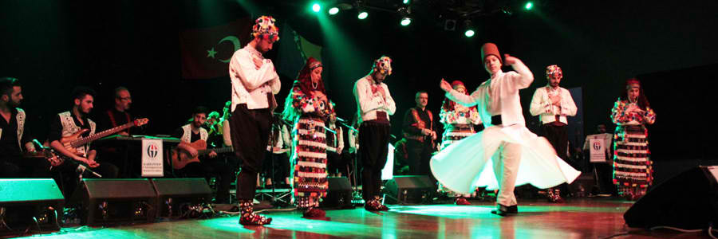

Hadandawa:
Hadandawa called also Sword dance is a dance from Sudan performed only by men. Arab sword dances evolved out of sword fighting between men. There was even a time when sword dancing was banned during Ottoman rule, as it was believed that dancers, who took swords from soldiers and pretended to "kill" them at the end of the performances, collected the swords to begin a resistance against army.

The Dabke:
The Dabke is the traditional folk dance of Palestine, going back generations. It can be danced by men, women, or both, with different steps and different rhythms. Dabke is a dance of community, often performed at weddings and other joyous occasions.